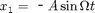
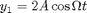
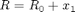
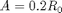
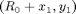
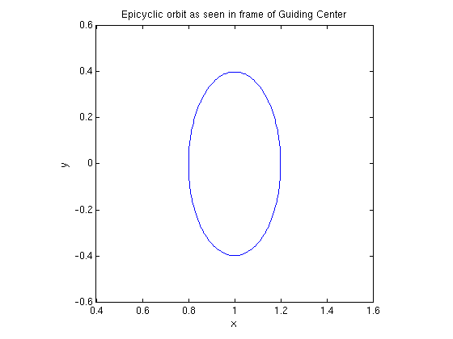
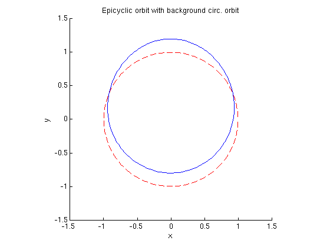

Keplerian Epicycles
To study the evolution of keplerian orbits (Newtonian gravity) with small eccentricities it is possible to find an approximate solution using a newtonian expansion to low order in eccentricity. In some circumstances this makes plotting an orbit simpler.
In this example, consider a test particle in a low-eccentricity (nearly circular) orbit with epicyclic perturbations  and , where  and . Taking  we can plot the epicycle in the frame of the guiding center (i.e. ) and as viewed by a distant observer.
For more on epicycles in potentials other than a Newtonian point mass see ../../GalacticOrbits/html/galorbs.html.
Contents
Frame of Guiding Center
% Initial parameter values R0 = 1; A = 0.2*R0; omegaT = linspace(0,2*pi,200); %values of omega*t for full orbit % Now I specify the background circular orbit x0 = R0*cos(omegaT); y0 = R0*sin(omegaT); % And then specify the epicyclic perturbation: x1 = -A*sin(omegaT); y1 = 2.0 *A*cos(omegaT); % Our first orbit to plot has x and y as: x = R0 + x1; y = y1; figure(1); clf plot(x,y) axis([R0-3*A R0+3*A -3*A 3*A]) axis square title('Epicyclic orbit as seen in frame of Guiding Center') xlabel('x') ylabel('y')
Frame of Distant Observer
Now we consider the full epicyclic orbit with the circular orbit background:
% First we consider the position of the perturbed orbti in circular coords: R = R0 + x1; phi = -omegaT + y1/R0; % Then transform this into cartesian coordinates for plotting: x = R.*cos(phi); y = R.*sin(phi); figure(2); clf hold on plot(x0,y0,'--r') %First we plot the background circular orbit in red dotted line plot(x,y,'b') % Then plot the perturbed orbit axis([-1.5*R0 1.5*R0 -1.5*R0 1.5*R0]) axis square title('Epicyclic orbit with background circ. orbit') xlabel('x') ylabel('y')